Novo po meri ili obnova onoga što već imate. Sve od drveta, sve u našoj radionici.
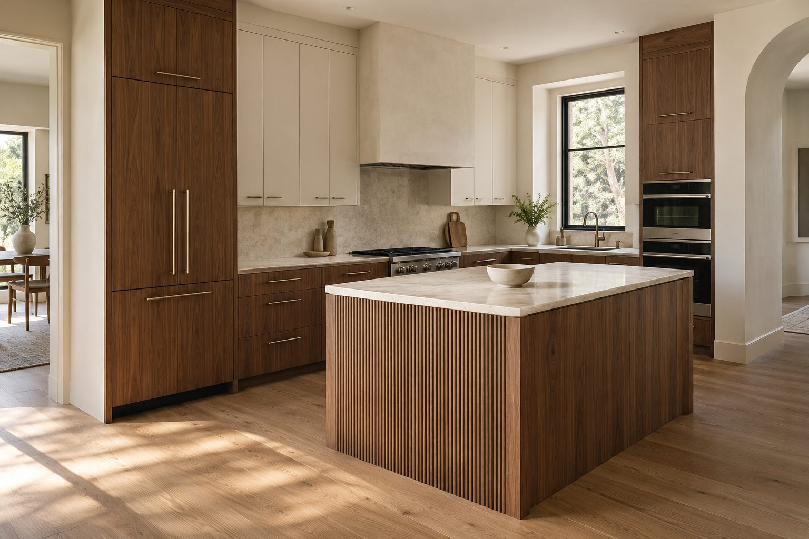
Ravne, ugaone, u obliku slova U i sa ostrvom, projektovane za vaš prostor.
Vidi više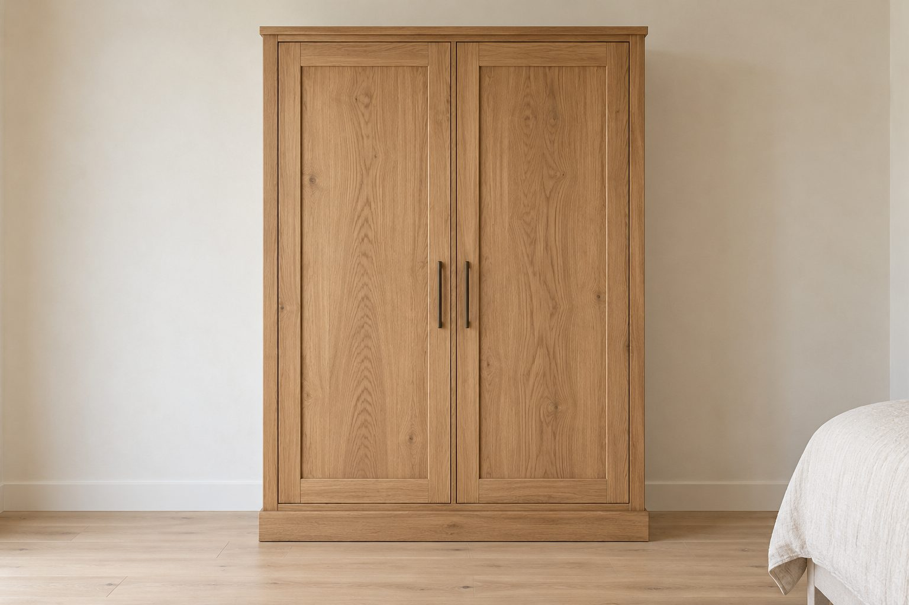
Ormari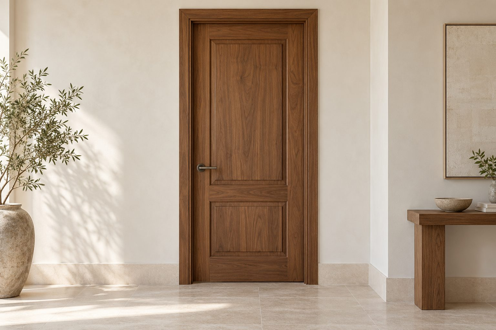
Vrata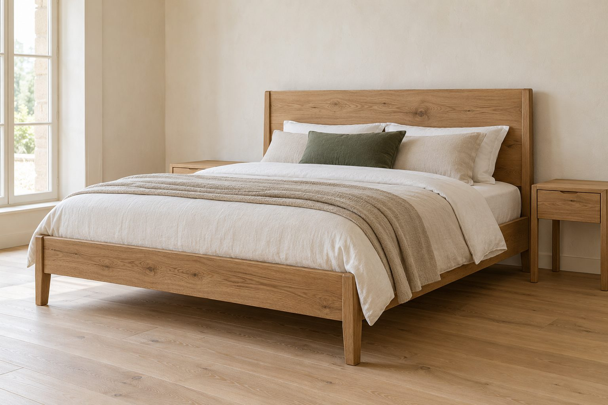
Kreveti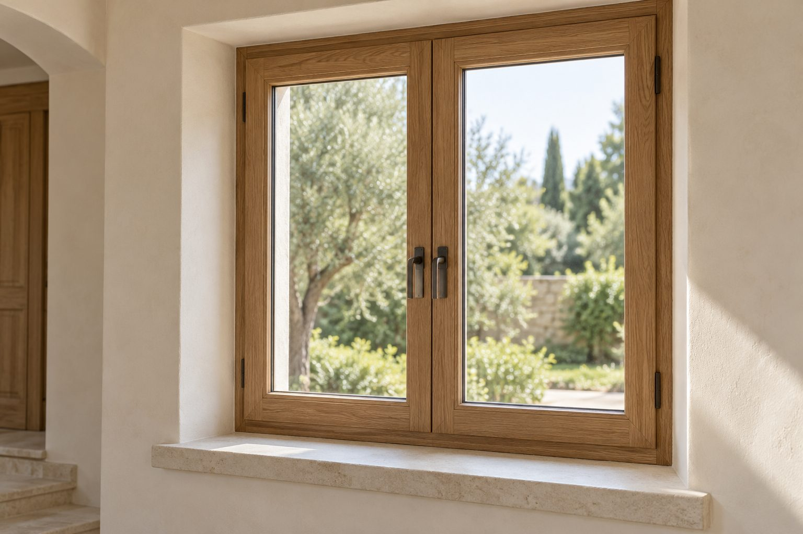
ProzoriDvokrilni ormari, unutrašnja i ulazna vrata, kreveti i drveni prozori.
Vidi više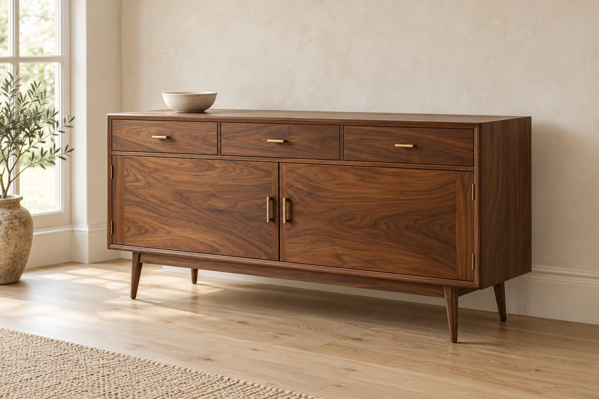
Stari nameštaj preradimo, popravimo i obradimo da opet bude kao nov.
Vidi višeNekoliko nedavno završenih radova, svaki pravljen po meri prostora i željama ljudi koji u njemu žive.
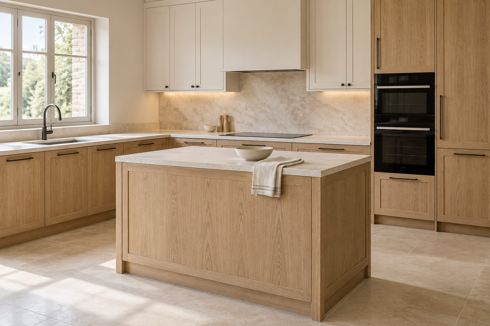
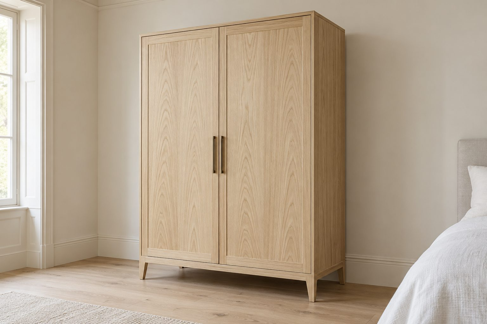
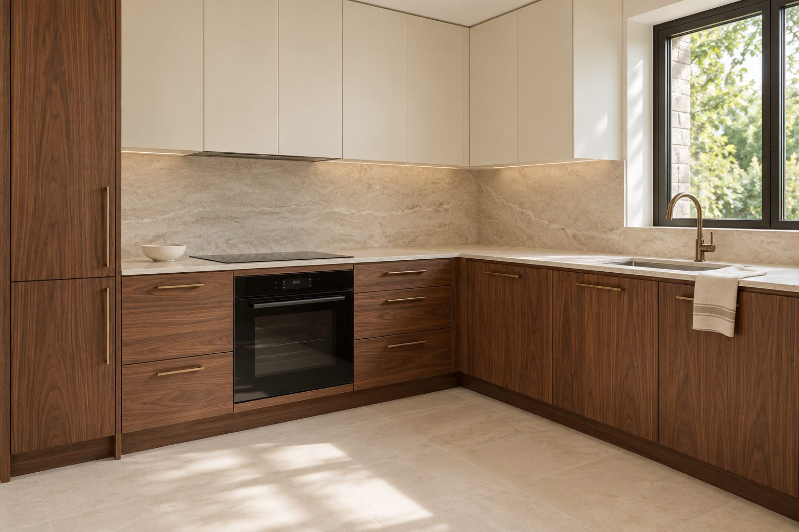
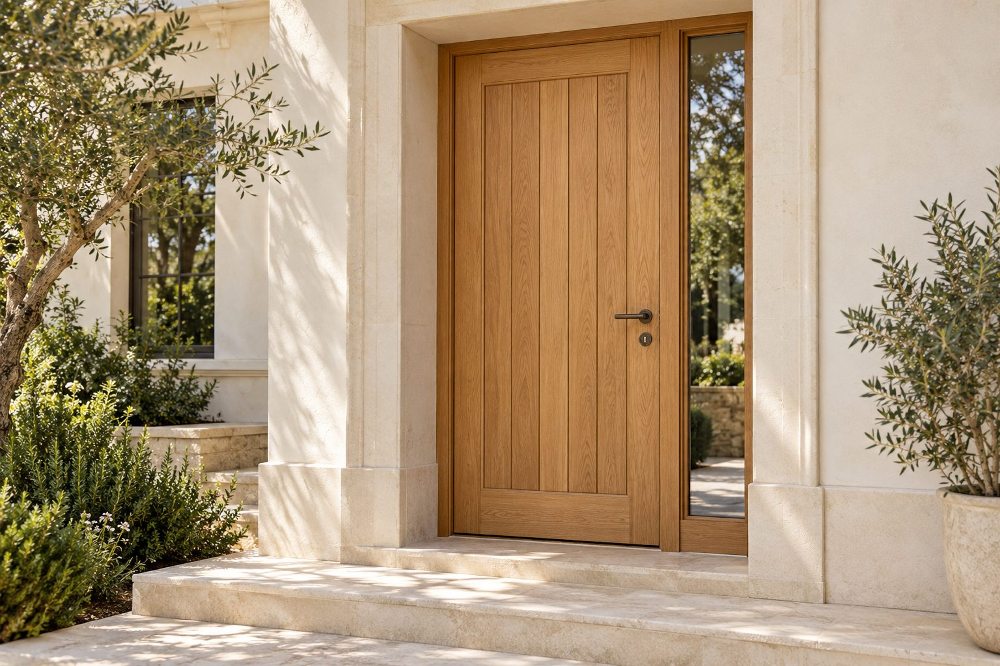
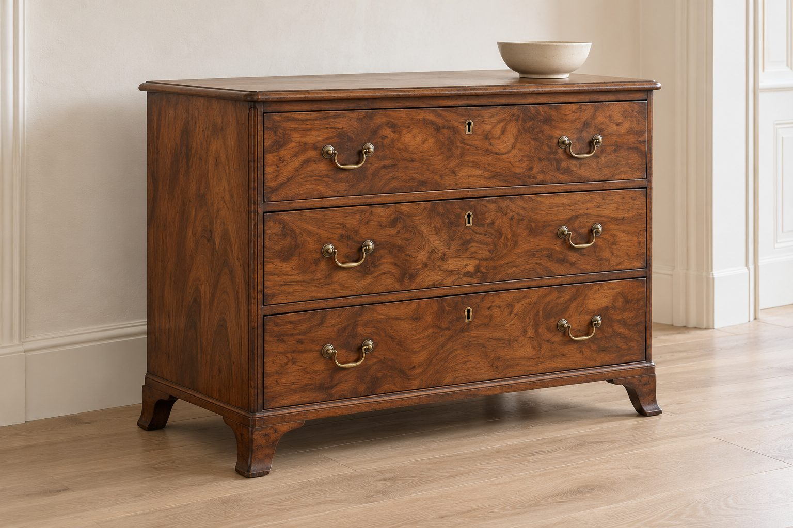
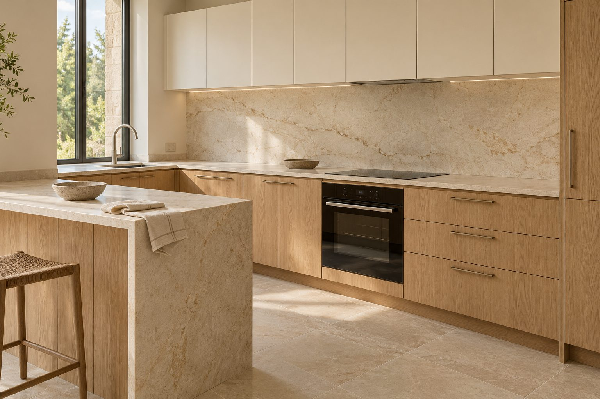
Stigla je izgrebana i bez sjaja. Skinuli smo stari lak, učvrstili fioke, očistili mesingane ručke i zaštitili drvo uljem. Šara oraha se ponovo vidi. Povucite klizač i uporedite.
Više o obnoviPet koraka od prvog razgovora do nameštaja koji koristite svaki dan.
Dolazimo na adresu, merimo prostor i slušamo šta vam treba.
Crtamo rešenje i 3D prikaz, menjamo dok ne bude kako treba.
Uživo birate drvo, fronte, radnu ploču i okove.
Svaki element radimo u radionici, ručno završavamo i proveravamo.
Montiramo, podešavamo i ostavljamo prostor čist.
Nameštaj traje onoliko koliko traje njegov najslabiji deo. Zato radimo samo sa materijalima i okovima koje bismo stavili u svoj dom.
Hoteli, restorani i porodice koji nam se godinama vraćaju i šalju nam svoje prijatelje.
„Uradili su nam recepciju, šank i nameštaj za sobe. Pouzdani su i rade bez greške. Znamo da posle njih ne moramo zvati druge majstore da prepravljaju.“
„Stolovi, obloge zidova i šank od oraha su njihovo delo. Godinama ih angažujemo za svaki stolarski posao i ne pada nam na pamet da ih menjamo.“
„Napravili su nam šank, police i stolove po meri prostora. Dogovor je uvek brz i jednostavan, a kvalitet je isti sve ove decenije koliko sarađujemo.“
„Kuhinja je posle deset godina kao prvog dana. Fioke se zatvaraju isto tiho.“
„Bakin orman smo hteli da bacimo. Sada je najlepši komad u stanu.“
„Tačno su rekli rok i cenu. Montaža je bila čista i brza.“
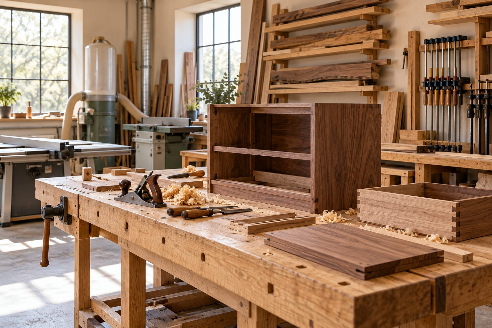
Eucalyptus je počeo 2000. godine u Kragujevcu. Danas, kao i tada, ne pravimo nameštaj za jednu sezonu, već da se koristi svakodnevno, godinama, i da i dalje izgleda dobro.
Više o nama